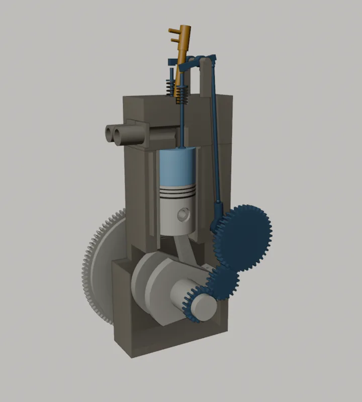

Motore diesel · quattro tempi
Il ciclo a quattro tempi, un grado alla volta
Scorrendo la pagina fai girare l'albero motore: due giri, cioè 720°, formano un ciclo completo. Il pistone, le valvole e l'iniettore si muovono in sincronia, e il diagramma pressione-volume mostra cosa succede ai gas nel cilindro.
Scorri per far girare la manovellaVai al ciclo01 · Il ciclo
Aspirazione, compressione, combustione, scarico
Il cilindro è in sezione e la testata è trasparente, così si vedono entrambe le valvole. Nel diagramma, la linea continua è il ciclo reale e quella tratteggiata il ciclo teorico; il punto segue il pistone.

-
Tempo 1 · 0° → 180°
Aspirazione
Il pistone scende dal punto morto superiore (PMS) a quello inferiore (PMI) con la valvola di aspirazione aperta. Nel cilindro entra solo aria, a una pressione poco sotto quella esterna, circa 0,9 bar. Nel diesel non c'è farfalla: la potenza si regola dosando il gasolio, non l'aria.
- Aspirazione aperta −15° → 225°
- Scarico chiude a 15°
Sul trattoreConta quanta aria entra. Un filtro intasato dalla polvere del campo toglie potenza e fa fumo nero: per questo c'è il prefiltro a ciclone. Nei motori sovralimentati il turbocompressore spinge dentro più aria, e così si può bruciare più gasolio.
-
Tempo 2 · 180° → 360°
Compressione
Chiusa anche l'aspirazione, il pistone risale e stringe l'aria in un volume circa venti volte più piccolo: arriva a 40–55 bar e a 450–650 °C, ben sopra la temperatura a cui il gasolio si accende da solo. A 15° prima del PMS l'iniettore spruzza il gasolio ad alta pressione nella camera del pistone. Non c'è candela.
- Valvole chiuse 225° → 490°
- Iniezione 345° → 370°
Sul trattoreA motore freddo le pareti sottraggono calore e l'aria compressa non basta ad accendere il gasolio. Candelette o griglia di preriscaldo servono solo all'avviamento: durante il ciclo non accendono nulla.
-
Tempo 3 · 360° → 540°
Combustione ed espansione
Dopo un ritardo di circa 1 ms il gasolio si accende da solo: la parte già iniettata brucia di colpo, il resto man mano che arriva. La pressione sale a 60–90 bar e spinge il pistone verso il basso. È l'unico tempo attivo: il volano accumula l'energia che servirà negli altri tre.
- Accensione ≈ 353°
- Pressione massima ≈ 368°
- Scarico apre a 490°
Sul trattoreDa qui vengono la coppia ai bassi regimi e la riserva di coppia: se la fresa incontra terra dura il regime cala, ma la coppia cresce e il trattore non si pianta.
-
Tempo 4 · 540° → 720°
Scarico
La valvola di scarico ha aperto 50° prima del PMI: i gas escono prima da soli, per la differenza di pressione, poi spinti dal pistone che risale. Vicino al PMS le due valvole restano aperte insieme per circa 30°: è l'incrocio, che lava il cilindro con aria fresca. A 720° il ciclo ricomincia.
- Scarico aperto 490° → 735°
- Incrocio 705° → 735°
Sul trattoreA pieno carico i gas escono a 400–650 °C. Nei motori sovralimentati quell'energia fa girare la turbina del turbo; poi i gas passano da filtro antiparticolato e SCR con AdBlue (Stage V).
02 · Teorico e reale
Perché il ciclo reale non è quello dei libri
Il ciclo teorico (Diesel ideale ad aria) è un modello: rende calcolabile il rendimento. Il ciclo reale, quello che si misura con un sensore di pressione nel cilindro, se ne discosta in cinque punti.
Aspirazione e scarico
- Teorico
- Due linee orizzontali alla pressione atmosferica, sovrapposte: lavoro nullo.
- Reale
- Si aspira sotto 1 bar e si scarica sopra: nasce il ciclo di pompaggio, un piccolo lavoro negativo (la lente nel diagramma).
Compressione ed espansione
- Teorico
- Adiabatiche, con esponente γ = 1,4.
- Reale
- Politropiche, con esponente circa 1,3–1,37: le pareti scambiano calore e un po' di gas trafila oltre le fasce.
Combustione
- Teorico
- Calore fornito a pressione costante, esattamente dal PMS.
- Reale
- Inizia prima del PMS dopo un ritardo d'accensione; la prima parte è quasi a volume costante (il picco), il resto più lenta. Somiglia di più al ciclo misto (Sabathé).
Valvole
- Teorico
- Aprono e chiudono di colpo nei punti morti.
- Reale
- Anticipi e ritardi (vedi la fasatura) e alzate graduali: gli spigoli del diagramma si arrotondano.
Rendimento
- Teorico
- Circa 65 % con ε = 20 e rapporto di combustione 2.
- Reale
- Effettivo 35–42 % nei diesel agricoli moderni: il resto va in calore a pareti e scarico, attriti e pompaggio.
La curva “reale” del diagramma è calcolata, non misurata. Usa la geometria del modello (ε ≈ 20), compressione ed espansione con esponente 1,34 e una combustione in due parti, premiscelata e diffusiva, con leggi di Wiebe tarate sui valori tipici della tabella. Serve a mostrare la forma del ciclo, non le prestazioni di un motore preciso.
03 · Fasatura
Quando si aprono le valvole
Il diagramma della distribuzione sovrappone i due giri su un solo cerchio: la manovella gira in senso orario, il PMS è in alto. Aprire in anticipo e chiudere in ritardo sfrutta l'inerzia dei gas e riempie meglio il cilindro.
- Aspirazione: aperta 240°, da 15° prima del PMS a 45° dopo il PMI.
- Scarico: aperto 245°, da 50° prima del PMI a 15° dopo il PMS.
- Iniezione: da 15° prima del PMS, dura circa 25°.
- AAA
- Anticipo apertura aspirazione
- RCA
- Ritardo chiusura aspirazione
- AAS
- Anticipo apertura scarico
- RCS
- Ritardo chiusura scarico
- AI
- Anticipo d'iniezione
- Incrocio
- AAA + RCS = 30°
Angoli tipici, non di un motore preciso: ogni costruttore li sceglie in base a regime e sovralimentazione. L'animazione del modello 3D è stata riallineata a questi valori.
04 · Valori tipici
I numeri del ciclo, con le fonti
Intervalli tipici per diesel a iniezione diretta; la colonna “In questa pagina” dice quale valore usano modello e diagramma. Dove la certezza è bassa o da verificare, conviene controllare sulla fonte prima di studiarlo.
| Grandezza | Intervallo tipico | In questa pagina | Fonte | Certezza |
|---|---|---|---|---|
| Rapporto di compressione ε | 16–22 : 1 | ≈ 20 : 1 (geometria) | H, B | alta |
| Pressione in aspirazione | 0,85–0,95 bar | 0,89–0,95 bar | H | media |
| Pressione a fine compressione (senza combustione) | 30–55 bar | ≈ 46 bar | H | media |
| Temperatura a fine compressione | 700–900 K ≈ 430–630 °C | ≈ 600 °C (stima) | H | media |
| Autoaccensione del gasolio | ≈ 220–260 °C | — | B | da verificare |
| Anticipo d'iniezione | 5–20° prima del PMS | 15° (345°) | H, G | media |
| Ritardo d'accensione | 0,5–2 ms | 8° ≈ 0,9 ms a 1500 giri/min | H | media |
| Pressione d'iniezione | 200–1000 bar pompa · 1600–2500 bar common rail | — | B | media |
| Pressione massima | 60–90 bar · 120–200 bar turbo | ≈ 78 bar a 368° | H, B | da verificare |
| Temperatura massima media dei gas | 1800–2200 K ≈ 1500–1900 °C | — | H | bassa |
| Temperatura allo scarico, pieno carico | 400–650 °C | — | B | media |
| Fasatura (AAA · RCA · AAS · RCS) | 5–25° · 30–50° · 40–60° · 5–25° | 15° · 45° · 50° · 15° | G | media |
| Rendimento teorico (Diesel ideale) | ≈ 60–65 % | 65 % (ε 20, ρ 2) | H | alta |
| Rendimento effettivo | 35–42 % | — | H, B | media |
| Consumo specifico | 200–240 g/kWh | — | B | media |
- H · J. B. Heywood, Internal Combustion Engine Fundamentals, 2ª ed., McGraw-Hill, 2018: cicli ideali, combustione nei motori diesel, scambio termico.
- G · D. Giacosa, Motori endotermici, Hoepli: fasatura della distribuzione, ciclo indicato.
- B · Bosch, Automotive Handbook (Kraftfahrtechnisches Taschenbuch): iniezione diesel, carburanti, emissioni.
Le fonti sono indicate per capitolo, non per pagina: i numeri vanno ricontrollati sull'edizione che usi. “Certezza” è una valutazione di chi ha scritto questa pagina, non della fonte.